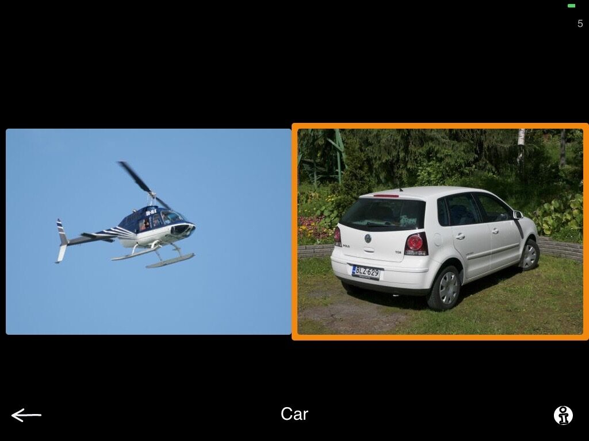
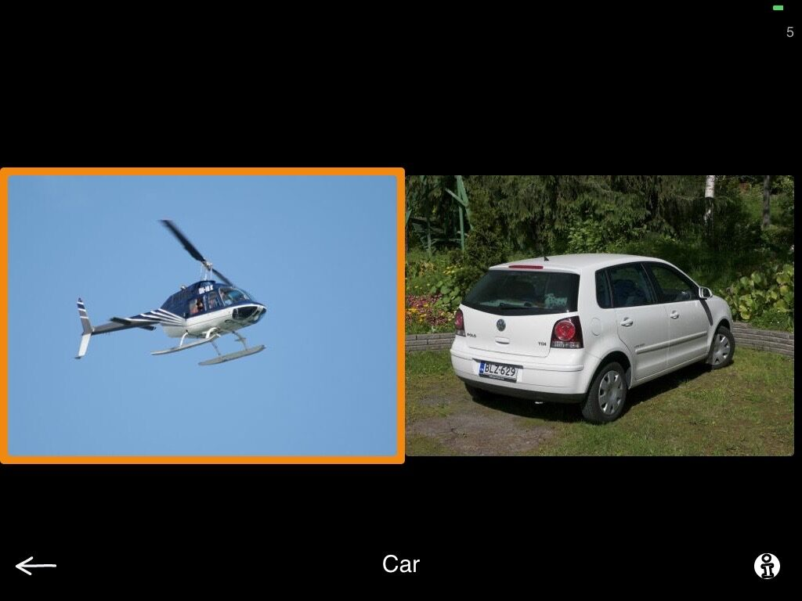
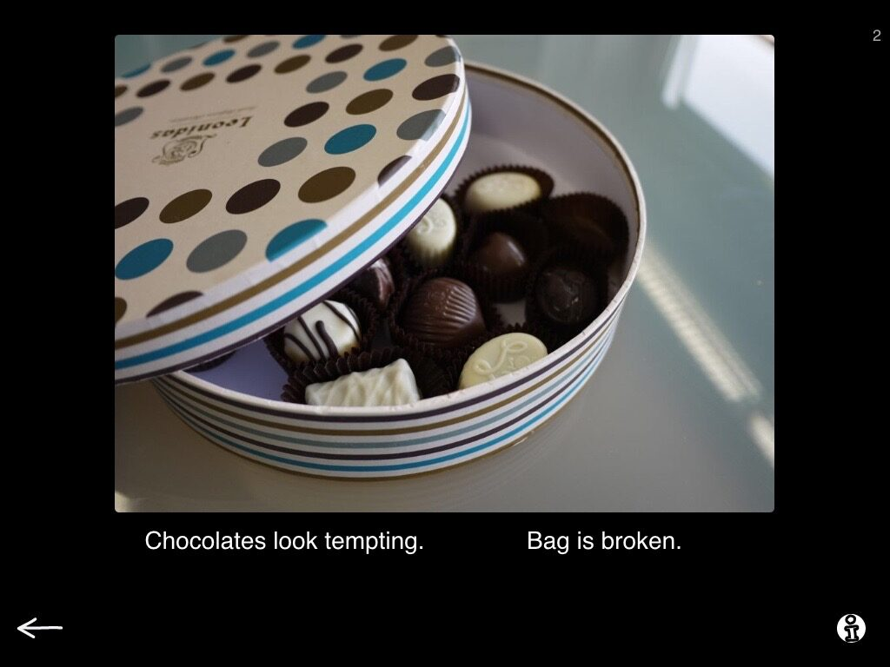
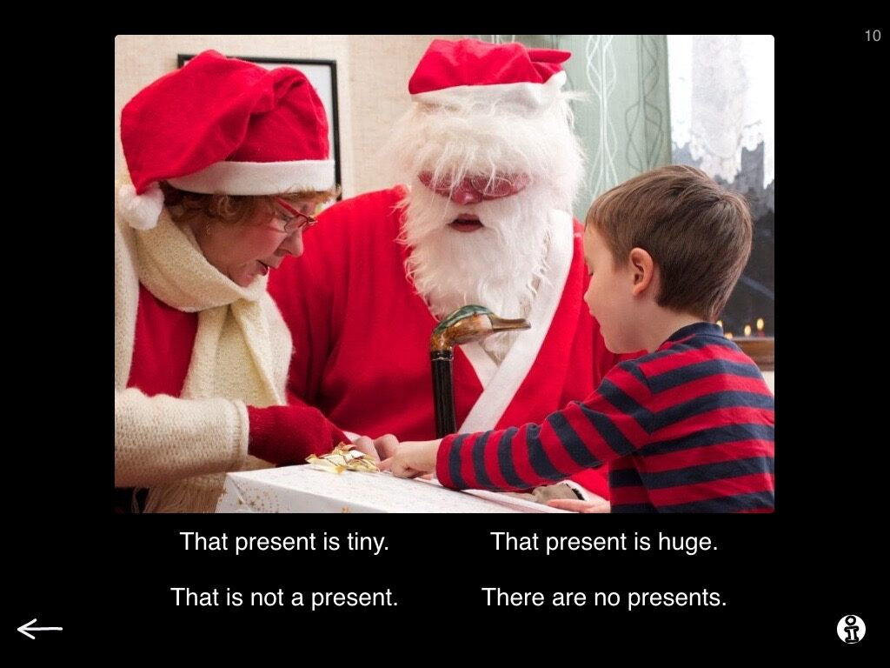
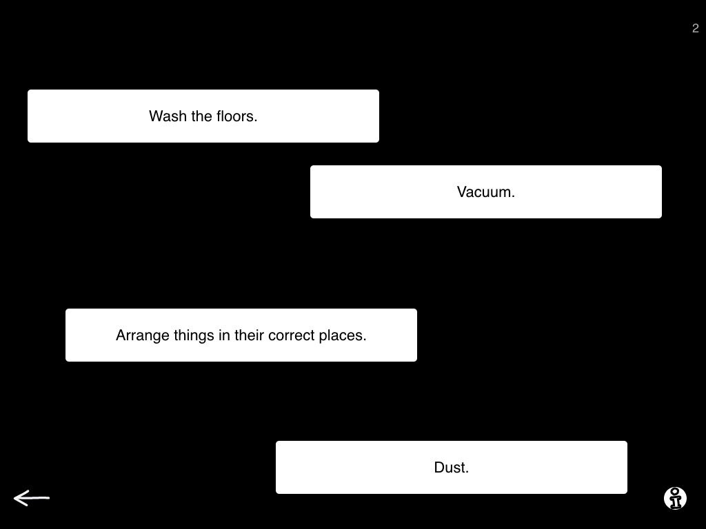
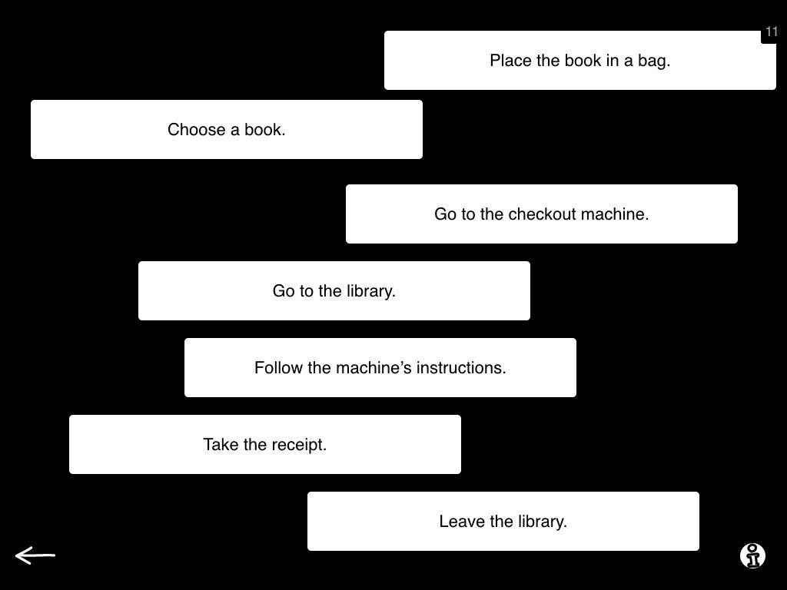
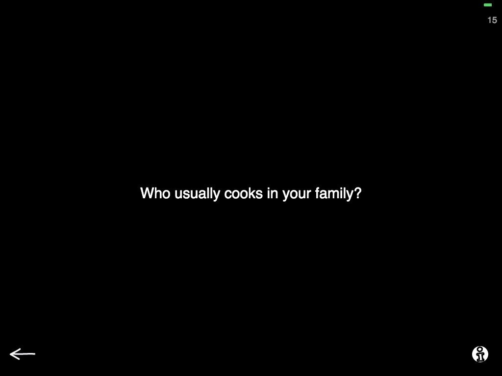
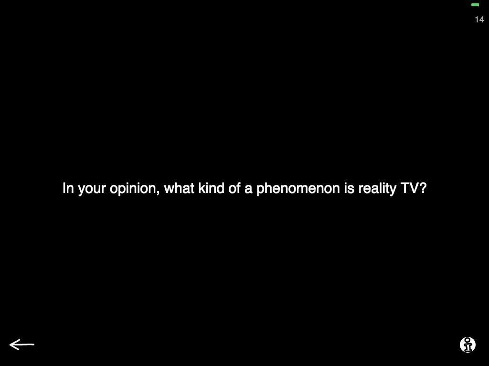
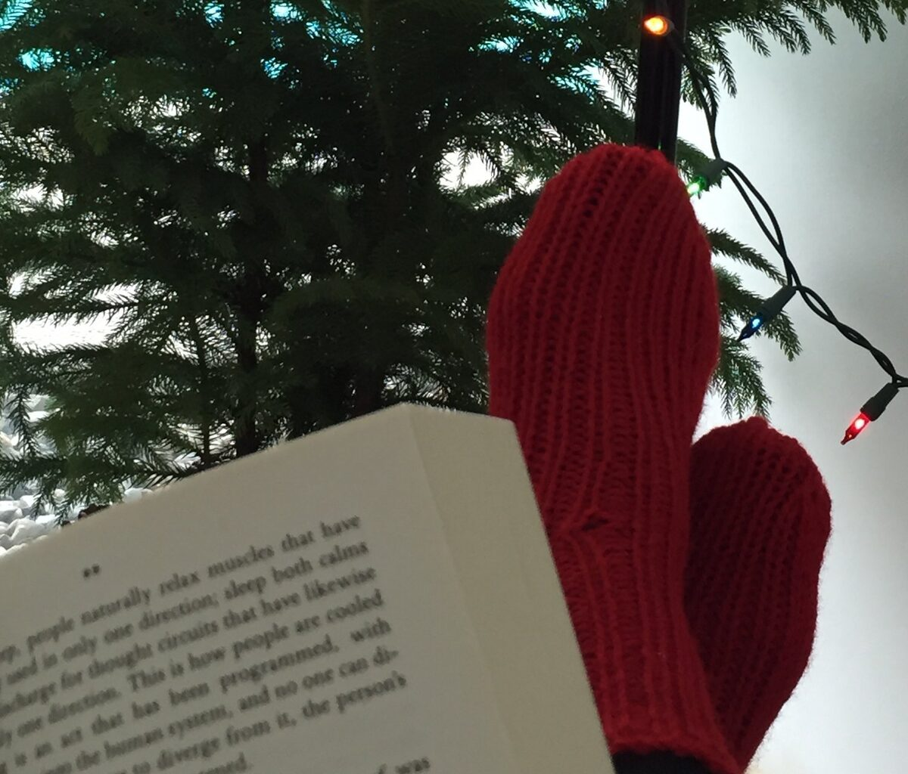

My absolute favorite holiday activity is reading. A nice cup of tea, holiday lights, warm socks knitted by grandma, you know the works. As the holiday season is upon us, I would like to share some gems from our Reading category with you today!
A quick glance of the reading menu will tell you that our tasks range from word level to story level, adding a few very functional tasks in the mix on the way.

Reading-menu

Word and picture - correct
Let's get started with Word and picture. Here you see 2-4 pictures on screen along with one word. Ask your patient to read the word and tap the corresponding picture. Tapping a picture highlights it with an orange rim. But wait, what? No matter which picture you tap, right or wrong, you always get the same rim around it?

Word and picture - incorrect
Yes, that is one of the gems throughout Sanapsis! The app does not give feedback, just like a book does not give you feedback on how well you are doing on your reading. You as the reader are in charge of judging whether you understood what you red. Right?
I like to have my patients working independently on many tasks and Word and picture is no exeption. As Sanapsis does not give feedback, my patients are thinking, making decisions and assessing their work as they go. When they are done, two of us go through the finished work together and my patient tells me how well they think they did. I always urge my patients to point out the tasks they are not quite sure of. If they like, I can then name the pictures on screen for them and they correct themselves as we go. Much more than just word level-reading, right?
The same applies for Sentence and picture.

Sentence and picture, 2 sentences, level 1
Here you get one picture and 2-4 sentences and the patient taps on the one they think matches the picture and it is highlighted.
Level 1 for this task gives you to simple, straightforward sentences that are easy to tell apart.

Sentence and picture. 4 sentences, level 2.
For level 2, there is a nice twist. Sentences are more similar to each other, talk about the same items and give subtle differences in meaning. These sentences require deeper reading skills and the number of sentences can always be added in settings. Great for advancing in steps!

Organize a story, level 1
Organize a sentence and Organize a story both provide excellent material for working on sequential processing and understanding meaningful entities.
Here you see two examples from Organize a story. The first one shows you a task from level 1 and it has 4 actions that need to be organized to form a meaningful entity. In this case instructions for cleaning the house (for the holidays, of course).

Organize a story, level 3
There are 3 levels to this task. You guessed it right, the higher the level the longer the story. On level to 3 you see a complex story, in this case 7 steps on going to the library.
For the last exercise today, I think I will choose Discussion starters. At first, it does not look like a traditional reading task, but let me assure you — it provides functional reading at its best!

Discussion starters, level 1
Here you ask the your patient to read a question and start a discussion with you on that topic. As usual, there is interesting stuff hiding in different levels!
On level 1 this task has questions and topics that can be answered using different AAC-methods like drawing, maps, personal booklets and devices.

Discussion starters, level 3
Level 2 has more abstract and complex topics and is at its best with our higher functioning patients. With this task I often ask my patient to scroll through the questions (reading them all!) and choosing 1-2 topics they would like to discuss with me.
I also ask my patients why they chose that particular question and with whom they could use this question in their everyday life as these discussions are always fun! It makes the patient explain the process, point out if there was something they did not understand and reason their choices. All good stuff for our patients.
So there you go, some ideas on how to make use of our Reading category. Now I believe it is time for me to put on those comfy socks and grab a book and enjoy some quiet time.

Nana, happy as a clam
Happy holidays everyone, be sure to make the most out of this festive, magical time of the year! Thank you and see you in 2016!